Exam Like Questions: Module 12
Lecture 26, 27, 28
T/F
1) Schrodinger equation enables the position of electrons in an atom to be accurately located.
Answer: False
Schrodinger Equation: 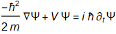
This equation, when solved, yields a wavefunction that does not tell you the position.
However, when normalized, 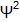 gives the probability of the position.
2) On subatomic scales quantum mechanics states that if you have a stationary particle it can be located anywhere.
Answer: True
Uncertainty Principle: ΔpΔx≥h
If Δp=mΔv then knowing that a particle is stationary means Δp=mΔv→0
The only way to satisfy the uncertainty principle is if Δx→∞
Multiple Choice
1) Sketch the probability density for n=2 state of the infinite square well that is located between x=0 and x=L, and determine where the particle is most likely to be found.
Answer:
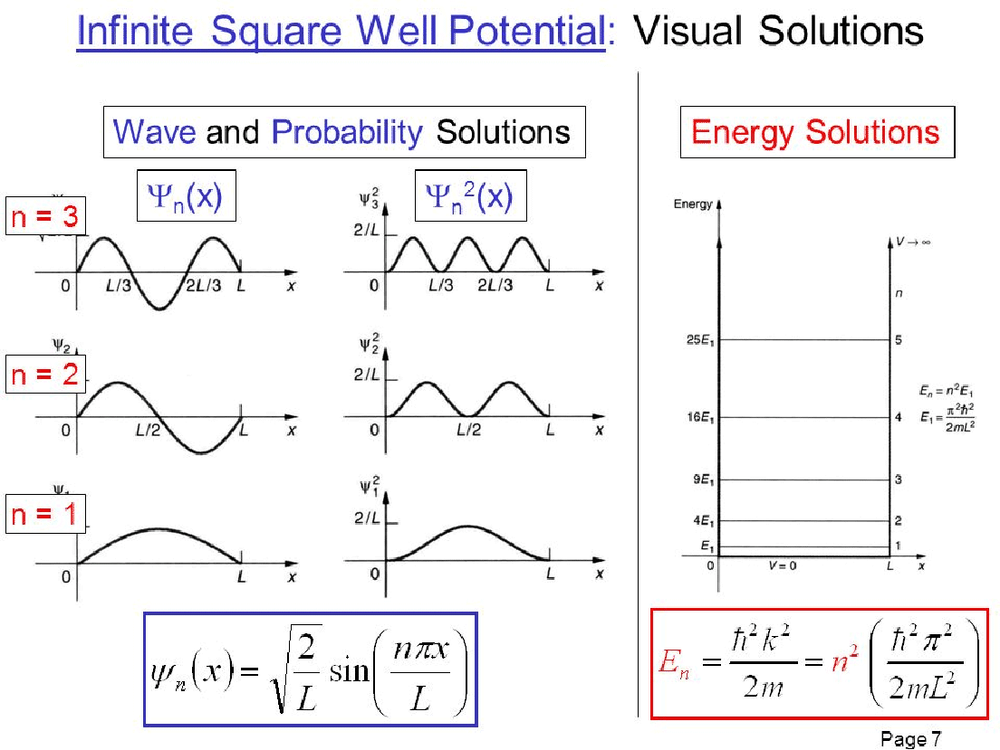
2) In a 1-dimensional infinite square potential well the energy of the electron in the fourth quantum level is 0.89 eV hence the width of the well is a) 0.414 nm, b) 5.2 nm, c) 0.45 nm, or d) 2.60 nm.
Answer: D
Energy for 1D infinite square potential well: 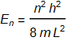
Tip: If you want to work with familiar constants convert energy for eV to J
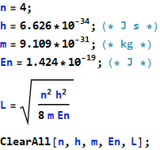
Problems
1) A laser emits 1.96 eV photons. If this emission is due to electron transitions from the n=2 to n=1 stats of an infinite square well, what is the well width?
Answer: 0.76 nm
Energy for 1D infinite square potential well: or 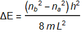
Tip: If you want to work with familiar constants convert energy for eV to J
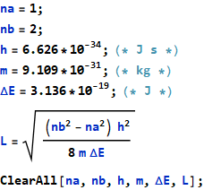
2) A proton drops from the n=5 to the n=4 level of an infinite square well that is 2.00 fm wide. Find a) the energy, b) the wavelength of the emitted photon, and c) what kind of photon is it (i.e., where in the E&M spectrum is it)?
Answer: a) b) c) Gamma
Energy for 1D infinite square potential well: or
Tip: If you want to work with familiar constants convert energy for eV to J
Photon Energy: 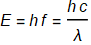
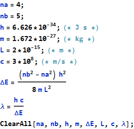
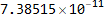
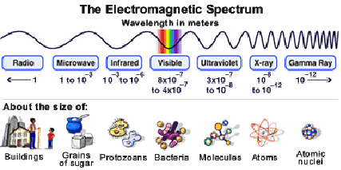